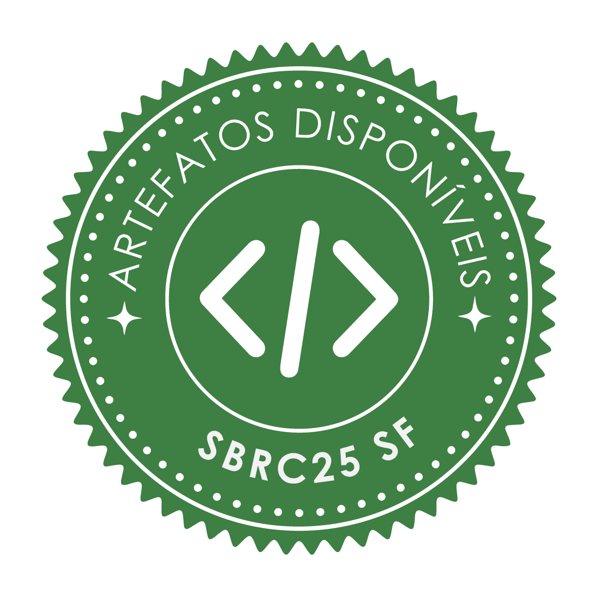
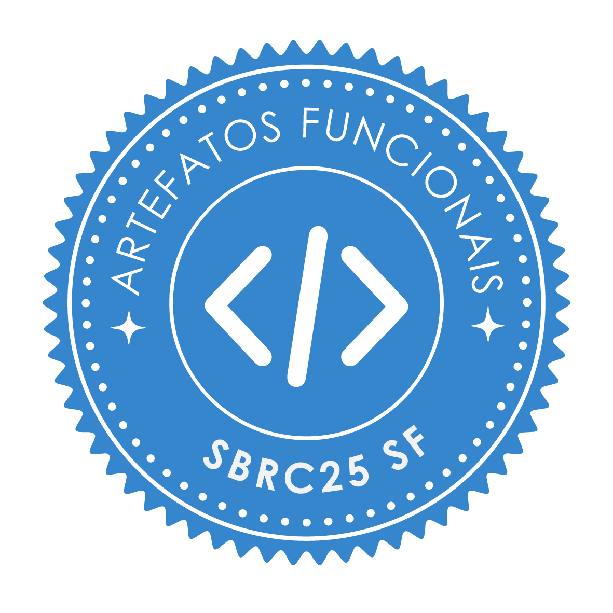
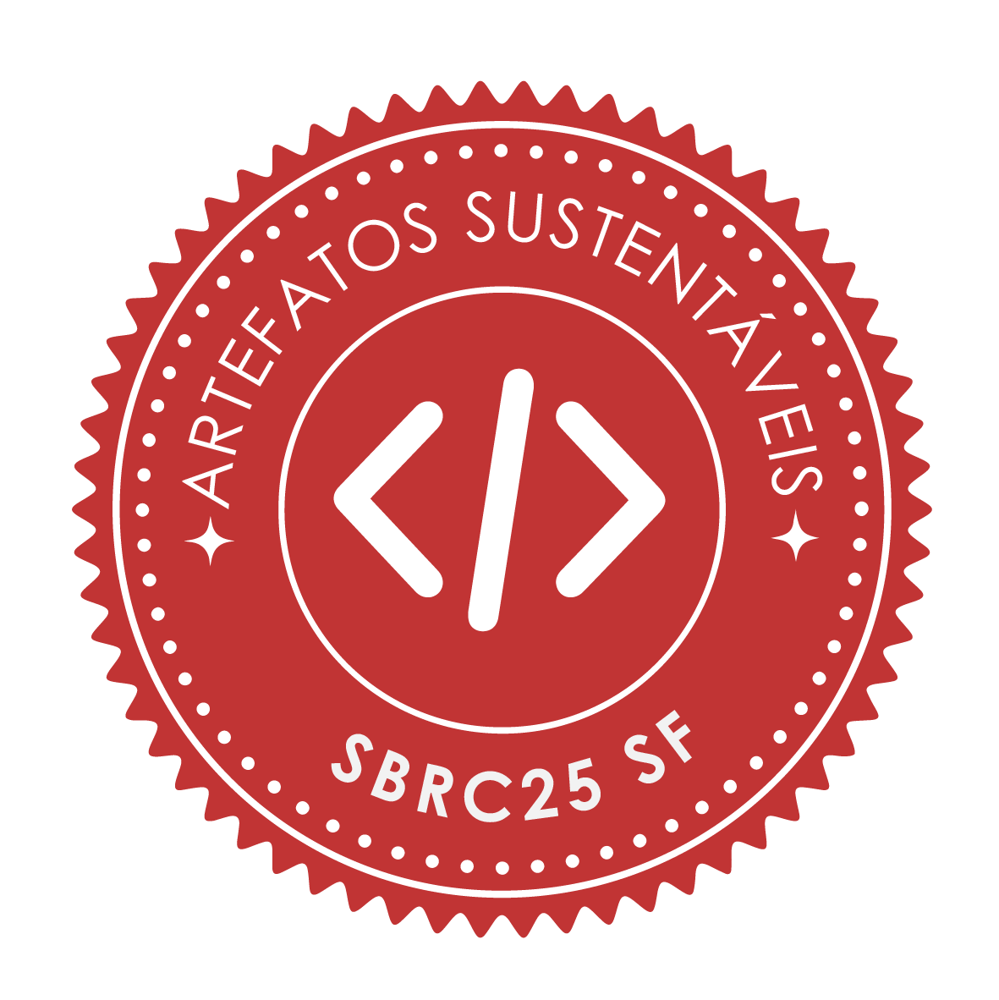
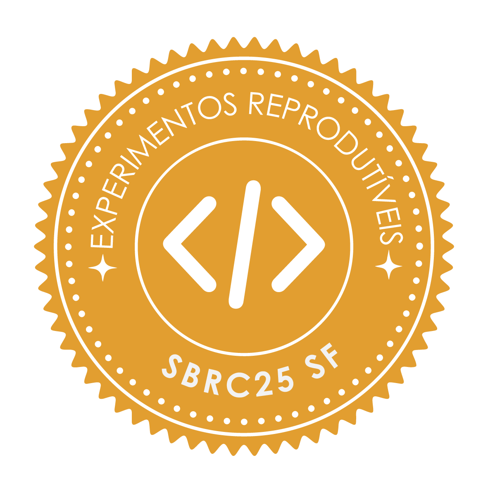

Resultados
Artigo | Disp. | Func. | Sus. | Repr. | Link |
|---|---|---|---|---|---|
| A New WAVE: Exploring New Load Pattern Models for Experimentation in Computer Networks |  | - | - | - | Artefato |
| AGATA – Arquitetura para Gerenciamento Automático de Tarefas de Aprendizado Federado |  |  | - | Artefato | |
| Cloud AutoDroid: Um Sistema Distribuído Escalável para Execução de Ferramentas de IA Generativa |  | Artefato | |||
| Dashboard HackInSDN: plataforma web para experimentação em redes e cibersegurança através de clusters Kubernetes | Artefato | ||||
| Hórus-CDS: O Olho Digital na Segurança das Smart Grids | - | - | Artefato | ||
| Inteligência de Ameaças Cibernéticas para Melhoria na Detecção e Resposta a Incidentes | - | - | - | Artefato | |
| Lab Cyber Academy: Um Cyber Range para Treinamento em Segurança da Informação Utilizando AWS e IaC | - | - | Artefato | ||
| Mininet-GUI: Uma Abordagem Visual e Interativa para Experimentação em Redes SDN | Artefato | ||||
| Mininet-WPAN: Enabling WPAN and IoT Emulations with 802.15.4 Support | - | Artefato | |||
| NFV-Prime: Uma Ferramenta para Prototipação e Visualização de Funções Virtualizadas de Rede | - | - | Artefato | ||
| Net2d: Gerência de Dispositivos e Serviços de rede baseado em uma Fonte Única de Verdade (SSoT) da Rede | - | Artefato | |||
| Sensor de Software Robusto para Identificar Pessoas em uma Cena de Vídeo | - | - | Artefato | ||
| THexCAD: Uma Plataforma de Prototipagem e Simulação de Cobertura para Área com Múltiplos Drones | Artefato | ||||
| UNetyEmu: Unity-based simulator for aerial and non-aerial vehicles with integrated network emulation | Artefato | ||||
| VulnSyncAI: PLN e LLMs para Construção e Atualização Contínua de Datasets de Vulnerabilidades | Artefato | ||||
| ns3-oran-customizable-db: Uma Ferramenta para Construção de Base de Dados Personalizável para Simulações Open RAN | - | Artefato |